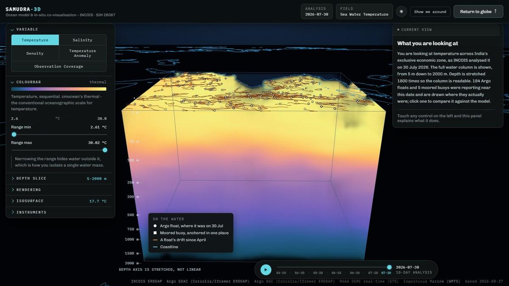
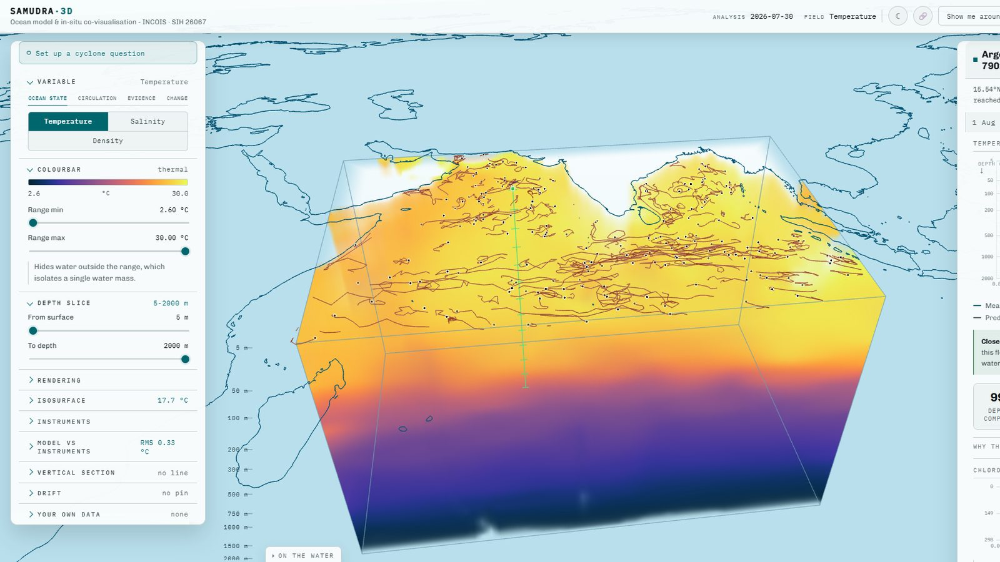
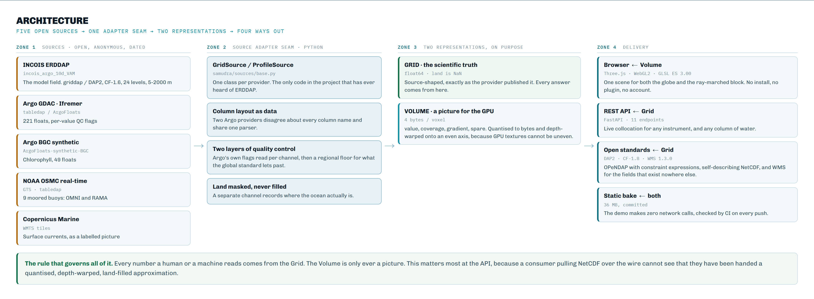
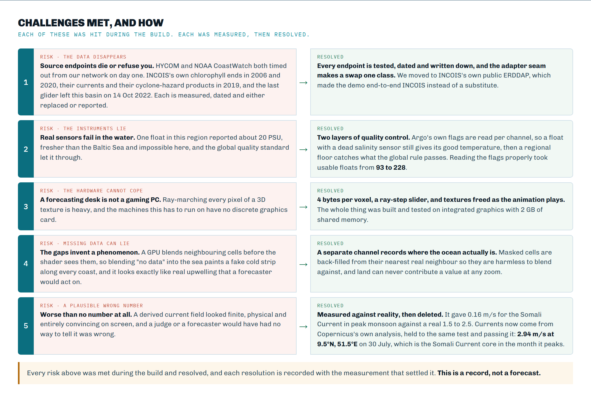
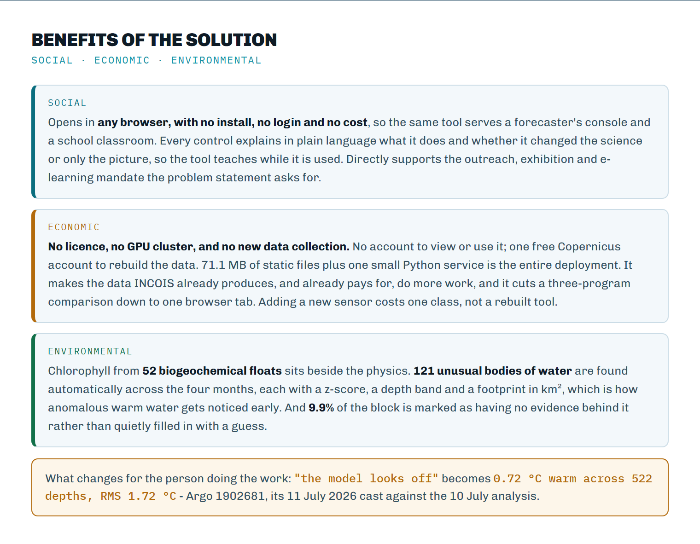

A browser-based platform that shows an ocean model and the instruments floating in that same ocean, in one picture, in three dimensions.
What we made. A website. You open a link and you are looking at a globe of India's ocean territory, coloured with real temperature data from INCOIS. You press one button and the ocean opens into a solid, see-through block of water going down two kilometres. You click on any of the robot instruments floating in it and a chart shows what that instrument actually measured against what the model predicted, with the difference shaded and measured.
Why. INCOIS already produces both of those things - the model and the measurements - and today nobody can look at them together. A forecaster has to open two different desktop programs and hold the comparison in their head. Almost every tool draws flat maps, one depth at a time, and the ocean is four kilometres deep.
What was missing. The problem statement lists it plainly: no web-based 3D view of ocean model data, no unified display of float profiles alongside model fields, no interactive controls, no way to add new data sources without re-engineering. We checked, and it is accurate. Nothing we could find does the co-visualisation in a browser.
What is different about ours. Three things. The dive from globe into water is one continuous motion rather than a switch between two screens. Water that is not changing is made transparent, so the thermocline - the structure that governs cyclone intensity - becomes the thing you see instead of being buried under a warm lid. And the comparison between model and instrument is a first-class feature with real statistics, not an overlay.
This is not a concept. It is a working prototype, deployed and publicly reachable, running on live data from INCOIS's own public server, current to 30 July 2026. It carries 377 automated tests over the scientific logic and sixteen written architecture decision records.

INCOIS, in Hyderabad, is India's national centre for ocean information. It runs numerical ocean models that estimate temperature, salinity and currents throughout the Indian Ocean, and it participates in the international Argo programme, which maintains a fleet of drifting robot instruments that measure the same properties directly.
Model output is an estimate calculated on a grid. Instrument data is a direct measurement at one point. Neither is complete on its own: the model covers everywhere but may be wrong, and the instrument is right but only where it happens to be.
| Gap in the problem statement | What that means for a person doing the job |
|---|---|
| No web-based, platform-independent 3D rendering with depth-resolved volumetric views | You must install specialist desktop software, and even then you usually get one depth at a time. You cannot send a colleague a link. |
| No unified display of Argo and glider profiles alongside model fields | The model and the measurement live in separate windows. Whether they agree is worked out mentally and never written down. |
| No interactive controls for variable, depth, time and colour | Changing what you are looking at means regenerating a plot, so exploration is slow and people stop exploring. |
| Cannot ingest new data streams without significant re-engineering | New observing capability - a mooring, an ADCP, HF radar - sits unused because connecting it means rewriting the tool. |
| No tools for rapid, intuitive understanding of 3D ocean phenomena | Slower hazard assessment, slower search-and-rescue support, slower fishery advisories. All of these are INCOIS's operational mandate. |
A cyclone draws its energy from warm surface water. How much energy is available depends not on the sea surface temperature alone but on how deep the warm layer goes. Two places can have identical surface temperatures while one has warm water down to 120 metres and the other only to 40. The first will intensify a storm and the second will not.
That boundary is called the thermocline. It is invisible on a surface map by definition, and it is exactly what a depth-resolved 3D view shows at a glance.
Specialists can already extract all of this. Desktop tools like Ferret, ODV and Panoply will produce a vertical section if you know what to ask them. The problem is not that the information is unobtainable; it is that obtaining it is slow, requires expertise, produces a static picture, and cannot be shared as a link. In an operational setting where an advisory is time-critical, that friction has a cost.
A website with two screens and one continuous motion between them. There is nothing to install, no plugin, no account, and no access token.
A dark globe with coastlines drawn as fine lines. India's exclusive economic zone and the surrounding seas are filled with colour showing INCOIS's temperature analysis at a chosen depth. Small white markers show every Argo float that reported recently, with faint orange lines tracing where each one has drifted.
Pressing "Dive into the water" causes the globe to unroll into a flat map while the camera descends, and the ocean opens into a rectangular block of water. Colour inside that block shows temperature at every depth simultaneously, from 5 metres down to 2000 metres. The block can be rotated, sliced to any depth range, and animated through four months of analyses.
Clicking a float opens a panel with a chart of depth against temperature. One line is what the instrument measured on its way up. The other is what the model said at that exact position and time. The area between them is shaded, three statistics quantify the disagreement, and a plain-language verdict says whether the agreement is close or not.

A right-hand panel explains whatever control you last touched: what it changes, what that physically means, what to look for, and something to try. Each explanation is badged with the distinction users most want, which is whether an adjustment changed the science or only the picture. A key in the corner names every mark on screen. The depth axis is labelled with real metres and states on screen that it is stretched.
Split into what the control does, and whether it changes the science or only the rendering. This distinction is shown in the application itself.
| Feature | What it does and why it matters |
|---|---|
| Variable selector | Science. Fifteen variables in five groups, arranged the way a forecaster thinks rather than the way the data arrived. Ocean state is what INCOIS publish plus the density derived from it. Hazard is the five quantities a cyclone forecaster names - depth of the 26 °C isotherm, cyclone heat potential, mixed layer depth, isothermal layer depth and barrier layer thickness - all computed here, because INCOIS published them until 2019 and then stopped. Circulation is the current vectors. Evidence is how much measurement stands behind the model, including INCOIS's own observation count and their own error estimate beside ours. Change holds two: departure from this build's own period average, and departure from the World Ocean Atlas 2023 1991-2020 normal for the same calendar month. |
| Time animation | Navigation. Twelve analyses at ten-day intervals covering April to July 2026. Each frame is a separate analysis published by INCOIS, not an interpolation. The colour scale is held fixed across all frames deliberately, so an apparent change is a real change and not the scale rescaling itself. |
| Sea surface level | Navigation. On the globe, chooses which depth is painted on the map, so a pattern can be followed downward without entering the 3D view. |
| Feature | What it does and why it matters |
|---|---|
| Volumetric rendering | The core. The whole water column is drawn at once by casting a ray through it for every pixel and accumulating colour. This is what makes it a volume rather than a stack of slices. |
| Water opacity | Rendering. How much light each metre of water blocks. Low values see all the way down; high values and the view runs out of transparency in the first few metres. |
| Feature emphasis | Rendering, and the reason anything is visible. Ocean temperature decreases smoothly with depth, so drawing every drop equally gives an opaque warm lid over an invisible abyss. Opacity is weighted by how fast the value is changing, so featureless water turns transparent and boundaries stay solid. |
| Depth slice | Navigation. Hides water outside a depth range, cutting the block open. |
| Vertical exaggeration | Rendering. The region is roughly 4000 times wider than it is deep. At true scale it would be an invisible film. Adjustable from 200x to 3500x; it changes shape only, never values. |
| Ray steps | Rendering only. How many samples are taken along each ray. Purely quality against speed; the one control that changes nothing scientific at all. |
| Isosurface | Science. Draws a solid skin through every point at one chosen value. The 20 °C isotherm is the standard marker for thermocline depth, and its depth tells a forecaster how much warm water a storm can draw on. |
| Feature | What it does and why it matters |
|---|---|
| Colourbar range | Science. Values outside the range become fully transparent, so narrowing the range isolates a single body of water and reveals its shape in three dimensions. This is an analytical act, not a recolouring. |
| Palette | Rendering. cmocean palettes, the standard in oceanography. They are perceptually uniform, meaning an equal step in value looks like an equal step in colour. Rainbow palettes are avoided because they create apparent boundaries that are not in the data. |
| Logarithmic scale | Rendering. Spreads colour unevenly to bring out detail when variation is concentrated at one end of the range. |
| Feature | What it does and why it matters |
|---|---|
| Float markers | Science. Every Argo float shown where it actually was at the moment on screen. Markers fade as their report ages and disappear when the float was not reporting near that date, so the display never implies an observation that does not exist. |
| Drift tracks | Science. The path each float took between surfacings, drawn progressively as time advances. Floats drift with the current at their parking depth, so the track is itself a measurement of deep flow. |
| Collocation | The contribution. Pairs an observed profile with the model interpolated to that profile's exact position and time. Comparison happens at the observation's depths, not the model's, so fine vertical structure is not smoothed away. |
| Residual statistics | Science. Depths compared, average gap (signed, so direction is meaningful) and typical gap. A plain-language verdict interprets them. |
| Guide panel | Comprehension. Explains whatever control was last touched, and otherwise describes the current view in plain language. 43 entries, one per control, and an automated browser check fails the build if a control is ever added without one. |
| Bias map | The contribution, at basin scale. Every instrument recoloured by how far the analysis sat from it, with a ranked list of the worst. Split by instrument kind, because INCOIS assimilate Argo: measured, the typical temperature gap is 0.17 °C across 221 floats against 0.75 °C across the nine moored buoys nothing assimilated, and pooling the two hides the honest number. |
| Vertical section | Science. Draw a line and the model is cut open along it, depth down and distance across, with every cast within 150 km on the same axes. Cut from the model's own grid rather than the rendered block, and checked value by value against the API: 1,102 values, worst gap 5×10-5 °C. |
| Drift | Search and rescue. Drop a pin and the analysed current carries it forward. The same integrator was run from 195 real floats' own positions, so it ships with a measured error rather than an assumed one: median 38.5 km over one Argo cycle, 87 km at the ninetieth percentile, across 1,908 cycles. |
| Feature | What it does and why it matters |
|---|---|
| Moving flow | Comprehension. A few thousand dots carried by the current at the chosen depth, each with a fading trail. An arrow gives the direction in one cell; the dots show where the water is going across the whole basin, and a viewer who has never read a vector plot reads them anyway. They run the same integrator as the drift model, so the animation carries a published error: a dot and a drift pin from the same start point land 0.002 km apart after 724 km. The trails are inked rather than coloured by speed, because a trail tinted by speed sits on water coloured by the same speed and disappears over slow water; the legend says the water carries the number. |
| Show me around | Comprehension. A guided walk in six chapters and 21 steps that visits every one of the 43 explained controls, opening each control's own explanation as it goes. A browser check fails if any control is ever left out, so the claim is measured rather than promised. |
| Explore | Outreach. The same platform as eight questions in plain words, each of which sets up the whole scene. Every question carries the caveat its simplification costs, beside the answer: the cyclone one states that it is a map of conditions and not a forecast. |
| Kiosk mode | Exhibitions. A URL flag hides every panel, scales the type for reading across a room, plays the questions on a loop and resets sixty seconds after the last visitor leaves, so a screen at a stall repairs itself. The depth ruler gains landmarks there: 1000 m becomes “a sperm whale hunting”. |
| Copy this view | E-learning. One button writes the variable, the date, the depth, the pin and the section line into a link. A teacher's worksheet is six links, which is e-learning without an e-learning platform. |
Our initial research concluded that INCOIS exposes no public API and that we would have to substitute an American model such as HYCOM. That turned out to be wrong twice over. HYCOM and NOAA CoastWatch were both unreachable from our network, while erddap.incois.gov.in is a real, running, public ERDDAP server carrying exactly what the platform needs. The demo therefore runs on INCOIS's own operational product rather than a stand-in.
| Dataset | What it is, and what we do with it |
|---|---|
| incois_argo_10d_VAM | INCOIS's 10-day gridded Argo analysis, produced by their Variational Analysis Methodology. Temperature and salinity on 24 depth levels from 5 m to 2000 m, on a 1° grid covering 30-120°E and 30°S-30°N, updated continuously and current to 30 July 2026. This is the model field the platform renders. |
| ArgoFloats (Coriolis / Ifremer) | The global Argo Data Assembly Centre mirror. Provides the in-situ profiles: pressure, temperature and salinity for each cast, with quality-control flags. Current, so it is what the demo compares against. |
| Indian_ARGO_Floats (INCOIS) | INCOIS's own Argo archive. Read by a second adapter to demonstrate extensibility. Deliberately not the demo's source: its coverage ends 23 April 2025, fifteen months behind the analysis, and comparing across that gap would be comparing two different oceans. |
| incois_valueadded_products | Mixed-layer depth, isotherm depths, heat content and geostrophic currents. Available and understood; not currently rendered because that series ends in 2019 and cannot share the timeline. |
| Natural Earth 1:50m | Public-domain coastline geometry for the globe and map. |
INCOIS's gridded analysis is derived from Argo profiles. Comparing the analysis against raw Argo casts therefore asks a genuine operational question - did the analysis reproduce the observations that fed it, and where did it not? - rather than setting two unrelated datasets against each other. INCOIS also publish their own error and observation-count fields alongside the analysis, which is how we know the comparison is one they themselves care about.
Real instrument data contains failures. One float in this region currently reports a surface salinity near 20 PSU, which is fresher than the Baltic Sea and impossible in the open Bay of Bengal. Argo's own global quality check passes anything above 2 PSU, because it must accommodate brackish marginal seas, so it does not catch this. We apply a stricter regional floor of 25 PSU and label it in the code as a judgement rather than a published standard.
The floor is 25 rather than something tighter because the northern Bay of Bengal genuinely is very fresh: discharge from the Ganges and Brahmaputra drives monsoon surface salinity down towards 28 PSU. Clamping at, say, 33 would delete one of the most scientifically interesting features in India's own waters as though it were instrument error. Filtering is applied per channel, so a cast with a failed salinity sensor still contributes its good temperature.

A GPU interpolates between neighbouring voxels before the shader sees them. If land were marked with a reserved "no data" value, that value would be averaged with the sea beside it, painting a cold fringe along every coastline. That does not look like a bug - it looks like upwelling, which is a real phenomenon a forecaster would act on. Fabricating one would be far worse than rendering a blocky coast. So masked cells carry a neighbouring real value, which is harmless to interpolate, and a separate coverage channel carries the truth about where the ocean is.
We precompute how fast the field changes at each point and weight opacity by it. Uniform water fades out and boundaries stay solid. This is precomputed rather than calculated live because doing it in the shader would cost six extra texture reads at every one of about 128 steps per pixel, which integrated graphics cannot absorb.
The rendered volume is quantised to bytes, depth-warped and back-filled across land, all for the GPU's benefit. Every scientific answer - a collocation, a statistic, an API response - is computed from the original grid instead. The rendering is a picture of the data and is never treated as the data.
The claim that a new instrument costs one class is easy to make and hard to believe, so we tested it. We added a second Argo provider, INCOIS's own archive, which disagrees with the first about everything superficial: it names every column in upper case and ships the delayed-mode adjusted fields completely empty, where the other names them in lower case and populates them. An adapter that trusted "adjusted" blindly would read it as a table of nothing.
Absorbing that forced one real design change: the column layout became data rather than code. Adding the second provider then cost a small subclass with four attributes and no new parsing logic. /api/sources reports every registered adapter with its column style and coverage limit, so the claim can be inspected rather than taken on trust.
A fair question is why this needs building at all. Here is each alternative and why it does not close the gap.
| Alternative | Why it does not solve the problem |
|---|---|
| Ferret, ODV, Panoply and similar desktop tools | Powerful and widely used, and they can produce vertical sections. But they must be installed, they require expertise, they produce static images, and they cannot be shared as a link. Crucially, none of them puts an interactive 3D model volume and an instrument profile in the same view. |
| Google Earth or a standard web map | Excellent at surfaces and terrain, but the ocean interior is not a surface. There is no notion of a depth-resolved volume of a scalar field, and no way to compare a model against an instrument. |
| ERDDAP's own built-in graphs | ERDDAP will draw a map or a simple profile, and it is what we fetch from. It is a data server with plotting attached, not a visual analysis environment; it cannot show a volume, cannot overlay two sources, and offers no interaction beyond re-querying. |
| A dashboard of 2D charts | This is the common answer, and it fails for the same reason a contour map fails to convey a mountain range. Vertical structure and its horizontal variation together are inherently three-dimensional; splitting them across panels puts the integration back in the viewer's head, which is the original problem. |
| Existing 3D ocean visualisation research | Prior work exists and we cite it. Qin et al. (2019) built a web 3D ocean forecast viewer, and V-MANIP demonstrated Argo-plus-model overlay through OGC services. Neither is a deployed, browser-native tool that a forecaster can open on INCOIS data with no install, and the problem statement's own gap analysis agrees. |
| Just handing over the numbers | The data is already available; that is precisely why the gap is a visualisation gap. A 24-level profile at every grid point is not something a person can hold in mind under time pressure. |
Feasibility is demonstrated rather than argued: the system exists, runs, and is publicly reachable. What follows are the risks that actually materialised during the build and what we did about each.

| Risk | What happened and how it was handled |
|---|---|
| Data unavailable | We assumed INCOIS had no public endpoint. It does. We now use their own product. Two alternative public sources were also verified reachable as fallbacks. |
| Upstream server unreachable at demo time | HYCOM and NOAA CoastWatch both time out from our network, which proved the point. Every byte the demo needs is baked into the build, so it makes zero network calls and a dead venue connection cannot affect it. |
| Weak graphics hardware | Developed against Intel integrated graphics with 2 GB shared memory. Ray-step count is adjustable, volumes are byte-quantised, and GPU textures are released when replaced. An earlier version leaked about 300 KB per second during playback and would eventually have crashed a demo. |
| Faulty instrument data | A live float reports impossible salinity. Per-channel quality control drops the bad measurement while keeping the good temperature from the same cast. |
| Rendering that misleads | Interpolating a "no data" marker painted false upwelling along coastlines. Resolved with a separate coverage channel. |
| TLS failure against INCOIS | Their server omits an intermediate certificate. Browsers hide this; Python does not. We supply the missing certificate rather than disabling verification. |
| Scaling to the full archive | 813 analysis steps exist and 12 are baked. Same pipeline, run longer; each volume is 159 KB, so the whole archive would be about 130 MB per variable. |

Cyclone forecasting. Intensity depends on the depth of warm water, not the surface temperature alone. The isosurface view shows thermocline depth across the whole basin in a single glance, and the comparison shows where the analysis is likely to be wrong about it.
Search and rescue. Drift depends on currents, which vary with depth. Being able to see water structure inside the actual search box, in seconds, supports faster decisions in situations where time is the binding constraint.
Fisheries advisories. Fish aggregate along thermal fronts and at particular mixed-layer depths. Both are three-dimensional features that a surface map cannot show.
Model validation. Perhaps the most durable benefit. Every collocation is a recorded, quantified check of the analysis against reality. Systematic patterns in those residuals - by region, by season, by depth - are exactly what improves a model over time.
The problem statement explicitly asks for a science communication tool. Because this runs in any browser with no install, a school class can fly into the Bay of Bengal on a laptop. The monsoon appearing in the animation, the freshwater plume from the Ganges visible as a salinity change, and the thermocline domes that feed cyclones are all things a non-specialist can see directly rather than be told about.
Argo float 2902306, in the Arabian Sea off Oman, 21.6 °N 60.9 °E, at the last analysis of this build. The platform reports 994 depths compared, with the model reading on average 0.50 °C warmer than the instrument measured and a root-mean-square gap of 0.63 °C. That is not a defect in the tool: it is the Arabian Sea upwelling season, when cold water is driven up from below and a 1° gridded analysis smooths it away. A forecaster would want to know that before issuing an advisory for that region, and today there is no quick way to find it out.
Nine architecture decision records are kept in the repository. The ones most likely to be asked about are summarised here.
| Decision | Reasoning |
|---|---|
| Three.js for both views, not Cesium | Cesium wants an access token for usable imagery, which is an external dependency that can fail during a demo; it ships around 10 MB; and compositing a custom ray-marched volume into its pipeline was the riskiest integration available. With one Three.js scene the dive becomes a genuine continuous deformation of one piece of geometry rather than a cross-fade between two libraries. The problem statement explicitly permits either. |
| INCOIS's public ERDDAP as the model source | It exists, it is current, and using the customer's own product removes the "this is not really our data" objection entirely. |
| Bake the demo data; keep the API as the deployable half | The demo runs on a venue network we do not control, with servers in Hyderabad and Brest. Baking removes that risk completely. The API still exists because a collocation is a query, not a fixture, and pre-computing every combination is neither possible nor sensible. |
| A warped, non-linear depth axis | Linear in metres would spend 85% of the texture on the featureless deep ocean and crush the thermocline into three voxels. Stretched depth axes are ordinary practice in oceanography; the chart uses the same stretch so the two views agree, and the axis is labelled on screen. |
| Four bytes per voxel, including coverage and gradient | Coverage prevents land from fabricating a temperature. Gradient makes a monotonic field legible. Both are precomputed because the shader budget on integrated graphics will not absorb them live. |
| Explicit draw order for transparent objects | Three.js sorts transparency by object centroid, which is meaningless for geometry spanning the globe. This cost several hours: the volume rendered perfectly and was then painted over by the sea surface. Order is now stated rather than inferred. |
| A display lift on the colour palettes | Perceptually uniform ocean palettes run to near-black at the cold end, which is invisible on a dark background. The lift is applied to the palette itself, so the colourbar shown in the panel and the water drawn in the scene are the same numbers. Applying it only in the shader would have made the legend a lie. |
| A regional salinity floor stricter than the Argo standard | The global check passes a failed sensor in this region. Our floor is regional, is a judgement call rather than a published threshold, and is labelled as such in the code. |
| Two Argo providers registered; the demo reads the current one | INCOIS's own Argo archive ends fifteen months before their analysis. Using it would compare two different oceans. It is implemented anyway, because it makes the extensibility claim checkable. |
This project was built with AI assistance, and we would say so if asked. What matters is what was verified rather than assumed: every data endpoint was tested with real requests before being relied on, the scientific logic carries 377 automated tests, rendering defects were diagnosed by measuring pixel extents and GPU state rather than by eye, and every number quoted in this document comes from the running system. Two findings in these pages - that INCOIS runs a public ERDDAP, and that a float in this region reports impossible salinity - contradicted our starting assumptions and were only caught because we checked.
| Is the ocean actually yellow? | No. Colour represents temperature, the way a weather map is not really red. The scale is shown in the panel: yellow is about 30 °C at the surface, violet is about 3 °C in the deep. |
| Why is it a box? The ocean is not a box. | The box is the region we are looking at - a rectangle of latitude and longitude, cut from the surface down to 2000 m. The sides are where our chosen window ends, not a physical wall. |
| Why does it look so tall? Is the ocean that deep? | No, it is exaggerated about 1800 times. The region is roughly 4000 times wider than it is deep, so at true scale it would be an invisible film. The stretch factor is shown on screen and adjustable. |
| What are the white dots and red lines? | Argo floats and their drift tracks. A key in the bottom-left corner names them. |
| Why does the bottom look black or empty? | Deep water is cold, and cold is the dark end of the colour scale. It is being drawn; it is simply dark. Narrowing the colour range makes it visible. |
| Why are the coastlines jagged? | The model is published on a 1° grid, so its coastline is that coarse. We deliberately do not smooth it, because smoothing would invent detail the data does not contain. The fine blue coastline drawn over the top is separate reference geometry. |
| Is this a game engine? | No. It uses WebGL, the browser's standard graphics interface. The rendering technique, ray marching through a 3D texture, is the same one used for medical CT and MRI visualisation. |
| Did you generate or simulate this data? | No. Every value comes from INCOIS's public server or the international Argo programme. Nothing is synthetic, and nothing is AI-generated. |
| Is it live or real time? | The data is real and current to 30 July 2026, but the demo runs from a local copy on purpose so a network failure cannot affect it. The live connection is real and can be demonstrated through the API. |
| What is an Argo float? | A robot instrument about the size of a person. It sinks to 2000 m, drifts for ten days, then rises to the surface measuring temperature and salinity all the way up, transmits by satellite, and repeats. There are around 4000 worldwide. |
| Who owns this data? | The gridded analysis is INCOIS's, part of the Ministry of Earth Sciences. Argo data is made freely available by the international Argo programme. Both are openly published and we credit both. |
| Why only temperature and salinity? | Those are what this INCOIS product publishes with full depth resolution. Density and the temperature anomaly are computed from them here, and chlorophyll now comes from the 49 Argo floats that carry a fluorometer. Adding a variable is configuration, not new code. |
| Are all the instruments Argo floats? | No. Nine are moored buoys - four of them India's own OMNI network, three from the joint MoES-NOAA RAMA array - reaching us through the public global weather feed. They are anchored, so they have no drift track, and because they never move their comparison follows the timeline: you watch one patch of ocean through the whole season. |
| Can we get the data out of it? | Yes, three ways: OPeNDAP, CF-1.8 NetCDF and OGC WMS 1.3.0, all served from the analysis on its native grid rather than from the volume used for rendering. You can open our OPeNDAP URL in xarray on your own machine. |
| Why stop at 2000 m? The ocean is deeper. | Because Argo floats profile to 2000 m, so that is the depth range the analysis covers. Below that there are very few measurements anywhere in the world. |
| If they disagree, is the model wrong? | Not necessarily, and this is the right question to ask. A disagreement means one of three things: the model missed something real, the instrument is faulty, or they are not measuring quite the same thing - the model is a 1° average while the float is a single point. The tool's job is to surface the disagreement so a human can decide which. |
| How do you know the float is not the wrong one? | We do not, from one comparison alone. That is why we apply quality control, show the number of depths compared, and report the pattern across all floats. An isolated large residual is suspicious; a consistent regional pattern, like the Oman upwelling case, is physical. |
| Is 0.5 a good number or a bad one? | Good. Across 84 floats the median typical gap is 0.46 °C, which is reasonable for an objective analysis. The application states this in words rather than leaving you to judge a bare number. |
| Why compare at the float's depths rather than the model's? | Because resampling the observation to suit the model would smooth away exactly the fine vertical structure that makes the comparison worth doing. |
| What if the float moved between the measurement and the analysis? | Each float is paired with the analysis step nearest in time to its cast, and the panel states both dates. If you scrub the timeline away from that step it warns you. |
| Who would actually use this? | Operational forecasters at INCOIS first. Then search-and-rescue coordinators, fishery advisory teams, model developers validating their analyses, and educators. |
| Does it work on a phone? | It loads, but it is designed for a desktop, because that is where a forecaster works and because volume rendering is demanding. The landing page is fully responsive. |
| What happens if the internet goes down mid-demo? | Nothing. The demo makes zero network calls once loaded. |
| How would INCOIS deploy it? | It is a static site plus an optional API. It can be dropped on any web server inside INCOIS, with the internal archive attaching at the adapter layer. |
| Is it secure? Does it need login? | It is read-only and publishes nothing. There is no login because there is no user data and no writes. Internal deployment would sit behind INCOIS's existing access controls. |
| Can it predict cyclones? | No, and it does not claim to. It shows the ocean conditions that determine how much energy a cyclone can draw on. Forecasting is a separate discipline; this makes one of its inputs visible. |
| How much would this cost to run? | Effectively nothing. It currently runs on free static hosting, with no licences, no databases and no compute servers. |
| What is the hardest part technically? | Making a monotonic field legible. Ocean temperature just decreases with depth, so a naive 3D render is an opaque warm lid over darkness. Weighting opacity by rate of change is what solves it, and it took several attempts. |
| How long did it take? | Built for this hackathon, with 377 automated tests and sixteen written decision records. |
| What would you do next? | Render geostrophic currents as 3D flow, add a bias map showing model error at every float across the whole EEZ, and connect the internal INCOIS archive. |
| Argo | An international programme operating around 4000 drifting robot instruments that profile the upper 2000 m of the ocean. Not an acronym. |
| Collocation | Pairing an observation with a model value at the same place and time. The core scientific act of this platform. |
| CF conventions | Climate and Forecast metadata conventions. The standard that makes a NetCDF file self-describing. |
| EEZ | Exclusive Economic Zone. The sea area over which a country has special rights, extending 200 nautical miles from its coast. |
| ERDDAP | A widely used open-source scientific data server. Provides data over plain web requests in many formats. |
| Isosurface | The surface joining every point that has one particular value, such as the 20 °C isotherm. |
| Mixed layer | The upper part of the ocean stirred by wind and waves into near-uniform temperature. |
| NetCDF | Network Common Data Form. The standard file format for multi-dimensional scientific data. |
| Profile | One vertical series of measurements taken by an instrument as it rises or sinks. |
| PSU | Practical Salinity Unit. Open ocean is typically 33-37; the northern Bay of Bengal can fall towards 28. |
| Ray marching | A rendering technique that steps along a line of sight through a 3D dataset accumulating colour. Used in medical imaging and here. |
| Residual | Observed value minus modelled value. The signed disagreement between an instrument and a model. |
| RMS | Root mean square. A way of averaging disagreements that ignores whether they are positive or negative. |
| Thermocline | The depth zone where temperature falls rapidly, separating warm surface water from cold deep water. Its depth governs how much energy a cyclone can extract. |
| Upwelling | Wind-driven rising of cold, nutrient-rich deep water. Strong along the Oman coast during the southwest monsoon. |
| VAM | Variational Analysis Methodology. The technique INCOIS uses to turn scattered float measurements into a complete gridded field. |
| Voxel | A volume pixel. One cell in a 3D grid. |
| WebGL | The browser's standard graphics interface, giving web pages access to the graphics card. |
pydap clientArgo data are collected and made freely available by the International Argo Program and the national programmes that contribute to it. The Argo Program is part of the Global Ocean Observing System. Gridded analysis products are produced and published by the Indian National Centre for Ocean Information Services (INCOIS), Ministry of Earth Sciences, Government of India.